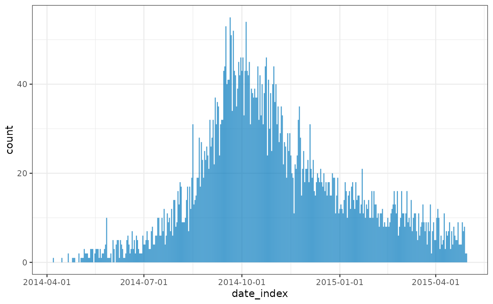
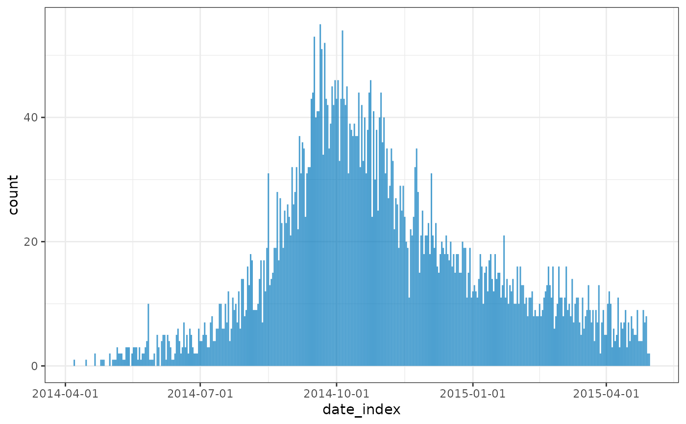

incidence2 includes two plotting functions to simplify graph creation.
Usage
# S3 method for incidence2
plot(
x,
count = NULL,
fill = NULL,
centre_dates = TRUE,
date_format = "%Y-%m-%d",
stack = TRUE,
title = NULL,
col_pal = vibrant,
alpha = 0.7,
color = NA,
xlab = "",
ylab = NULL,
n_breaks = 6,
width = 1,
show_cases = FALSE,
border = "white",
na_color = "grey",
legend = c("right", "left", "bottom", "top", "none"),
angle = 0,
size = NULL,
...
)
facet_plot(x, ...)
# S3 method for incidence2
facet_plot(
x,
count = NULL,
facets = NULL,
centre_dates = TRUE,
date_format = "%Y-%m-%d",
stack = TRUE,
fill = NULL,
title = NULL,
col_pal = vibrant,
alpha = 0.7,
color = NA,
xlab = "",
ylab = NULL,
n_breaks = 3,
width = 1,
show_cases = FALSE,
border = "white",
na_color = "grey",
legend = c("bottom", "top", "left", "right", "none"),
angle = 0,
size = NULL,
nrow = NULL,
...
)Arguments
- x
An
incidence()object.- count
Which count variable to have on the y-axis. If NULL (default) the first entry returned from
get_count_names(x)is used.- fill
Which variable to color plots by. If NULL no distinction if made for plot colors.
- centre_dates
If the interval is one of a single week, month, quarter or year the x_axis labels are centred with custom category labels. Set this option to FALSE to use date labels at the breaks.
- date_format
Format to use if "Date" scales are required. The value is used by
format.Date()and can be any input acceptable by that function (defaults to "%Y-%m-%d).- stack
A logical indicating if bars of multiple groups should be stacked, or displayed side-by-side. Only used if fill is not NULL.
- title
Optional title for the graph.
- col_pal
col_pal The color palette to be used for the groups; defaults to
vibrant(see?palettes).- alpha
The alpha level for color transparency, with 1 being fully opaque and 0 fully transparent; defaults to 0.7.
- color
The color to be used for the borders of the bars; NA for invisible borders; defaults to NA.
- xlab
The label to be used for the x-axis; empty by default.
- ylab
The label to be used for the y-axis; by default, a label will be generated automatically according to the time interval used in incidence computation.
- n_breaks
Approximate number of breaks calculated using
scales::breaks_pretty(default 6).- width
Value between 0 and 1 indicating the relative size of the bars to the interval. Default 1.
- show_cases
if
TRUE(default:FALSE), then each observation will be colored by a border. The border defaults to a white border unless specified otherwise. This is normally used outbreaks with a small number of cases. Note: this can only be used ifstack = TRUE- border
If show_cases is TRUE this represents the color used for the borders of the individual squares plotted (defaults to
"white").- na_color
The colour to plot
NAvalues in graphs (default:grey).- legend
Position of legend in plot.
- angle
Rotation angle for text.
- size
text size in pts.
- ...
other arguments to pass to
ggplot2::scale_x_continuous().- facets
Which variable to facet plots by. If NULL will use all group_labels of the incidence object.
- nrow
Number of rows.
Value
facet_plot()andplot()generate aggplot2::ggplot()object.
Details
plotcreates a one-pane graph of an incidence object.facet_plotcreates a multi-facet graph of a grouped incidence object. If the object has no groups it returns the same output as a call toplot().If the
incidence()object has a rolling average column then that average will be overlaid on top.
Examples
if (requireNamespace("outbreaks", quietly = TRUE) && requireNamespace("ggplot2", quietly = TRUE)) {
withAutoprint({
data(ebola_sim_clean, package = "outbreaks")
dat <- ebola_sim_clean$linelist
inci <- incidence(dat,
date_index = date_of_onset,
interval = 7,
groups = hospital)
inci2 <- incidence(dat,
date_index = date_of_onset,
interval = 7,
groups = c(hospital, gender))
plot(inci)
plot(inci, fill = hospital)
plot(inci, fill = hospital, stack = FALSE)
facet_plot(inci)
facet_plot(inci2)
facet_plot(inci2, facets = gender)
facet_plot(inci2, facets = hospital, fill = gender)
})
}
#> > data(ebola_sim_clean, package = "outbreaks")
#> > dat <- ebola_sim_clean$linelist
#> > inci <- incidence(dat, date_index = date_of_onset, interval = 7, groups = hospital)
#> > inci2 <- incidence(dat, date_index = date_of_onset, interval = 7, groups = c(hospital,
#> + gender))
#> > plot(inci)
 #> > plot(inci, fill = hospital)

#> > plot(inci, fill = hospital, stack = FALSE)
#> > plot(inci, fill = hospital)

#> > plot(inci, fill = hospital, stack = FALSE)
 #> > facet_plot(inci)
#> > facet_plot(inci)
 #> > facet_plot(inci2)
#> > facet_plot(inci2)
 #> > facet_plot(inci2, facets = gender)
#> > facet_plot(inci2, facets = gender)
 #> > facet_plot(inci2, facets = hospital, fill = gender)
#> > facet_plot(inci2, facets = hospital, fill = gender)